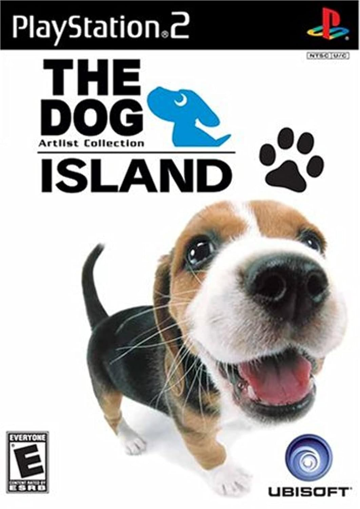

THE DOG Island Guide
Welcome to THE DOG Island Guide! This site provides a full game walkthrough and completion guide for the 2007 video game THE DOG Island!
What is THE DOG Island?

THE DOG Island is a video game made by YUKE's based on THE DOG franchise, published outside of Japan by Ubisoft. It is an adventure-based role-playing game where the player takes the role of a dog whose younger sibling is terminally ill and requires special medicine. In order to find the medicine, the protagonist travels to THE DOG Island and trains to become a sniff master. The game was developed for the PlayStation 2 and the Nintendo Wii.
The game was largely overlooked for a variety of reasons. It is often treated as a "weird" game — many people, especially in the West, were drawn in by expectations about what kind of game would have you play as a puppy dog in bright, colorful environments, and got caught off guard by the more serious and darker plot elements. Because of that, a lot of the limited attention it got was in "ironic" circles, where works are laughed at and often dismissed as inherently low quality, especially if they are "weird," despite many of these titles (including THE DOG Island) typically reviewing at average scores or higher. This is not helped by the game's casual play style and atmosphere, such as its lack of combat mechanics, in a culture where "hardcore" games are more celebrated.
Due to the lack of attention the game received, there is little information available on the Internet about actually playing it. This poses a problem in the modern era of gaming, where in-depth guides and walkthrough material are readily available for most titles (particularly modern titles) and players are more likely to become frustrated with aimless trial-and-error methods. THE DOG Island Guide was made with the purpose of closing this gap and making the game simpler to follow for new players who are curious about older titles.
You can read more about the game on its Wikipedia article. The game has a spiritual successor (also made by YUKE's and published by Ubisoft) in Petz: Dogz 2 and Petz: Catz 2, lacking THE DOG branding, with lighter story elements but improved gameplay. You can read about these games on their Wikipedia article.